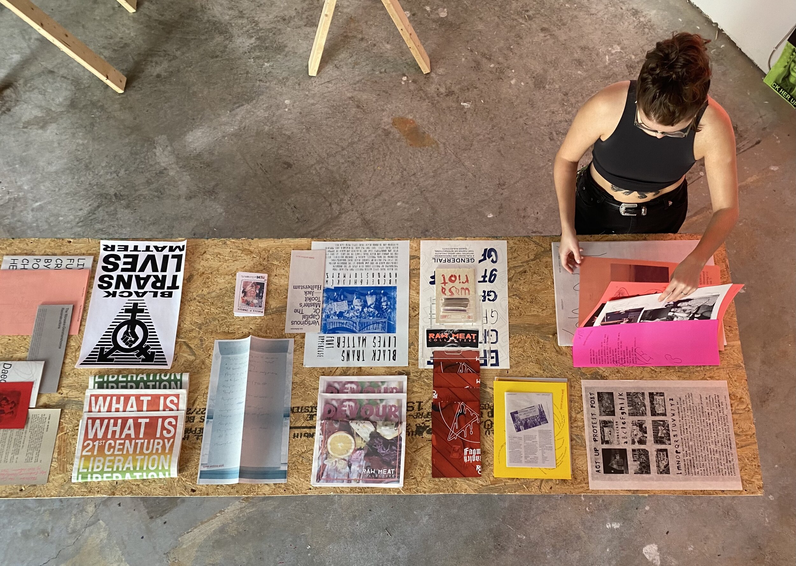
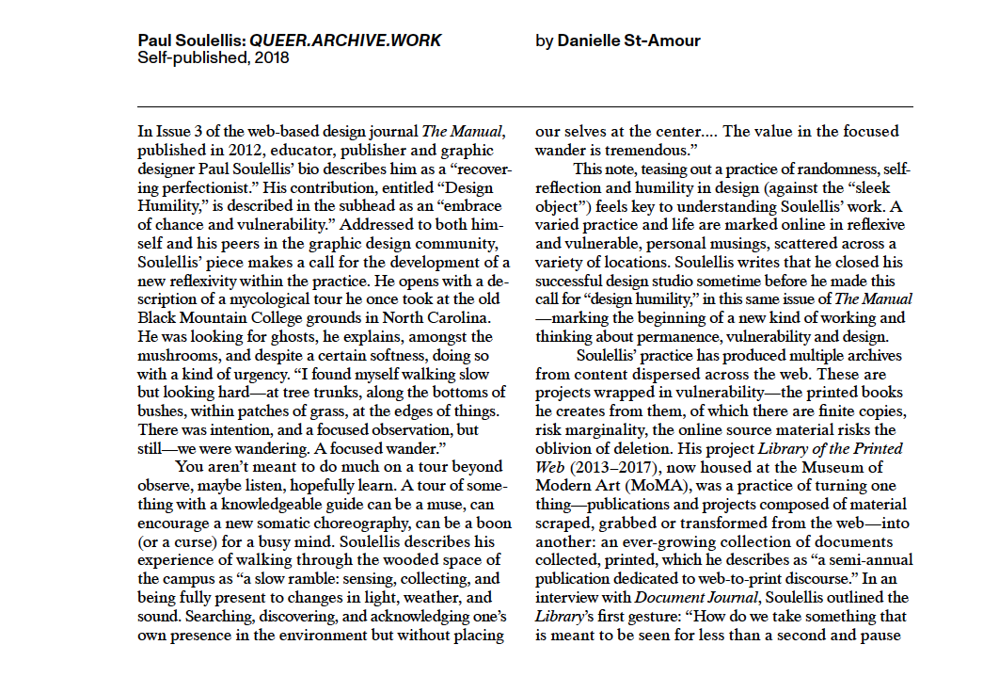

I was invited by AIGA Los Angeles to create a 2-week online workshop with MJ Balvanera, resulting in a collaborative risograph publication to be produced in Providence and Mexico City, and distributed from Los Angeles. “work/less workshop” took place over 8 days (October 2–9, 2021) with 20 participants, who allowed us to interrupt their work-week with prompts for spontaneous creating, generating creative “non-work” that challenged normative expectations around time, labor, and career. The publication is in production and will be ready by the end of 2021.
☓

“QUEERS, READ THIS! looks at contemporary artists, independent publishers, and collectives that use printed matter as a practice of 21st century liberation and resistance. Compiled into an interactive reference library and archive, the editions included explore topics ranging from Queerness, LGBTQIA+ rights, Trans identity, gender, race, and politics.” Several Queer.Archive.Work publications designed and edited by me are featuring in this exhibition at VAE Raleigh in North Carolina (October 19–December 17, 2021), curated by Ant M Lobo-Ladd (image: VAE).
☓
APRIA, a peer-reviewed journal based in Arnhem, Netherlands, invited me to contribute to their special Urgent Publishing issue, edited by Miriam Rasch and Nishant Shah and launched in October 2021. Other contributors in the issue are Florian Cramer, Labor Neunzehn, and Miriam Rasch.
“The brief rainbow-ification of corporate logos and merchandise every June left us wondering what a more radical vision of queer design would look like. That’s why Paul Soulellis’s zine, ‘What Is Queer Typography?,’ caught our eye. Soulellis is an associate professor of graphic design at the Rhode Island School of Design and the director of a nonprofit publishing studio and residency called Queer.Archive.Work that provides space and resources to artists for print projects.”
Eva_script (2016) is a collaborative textual work that I created with Sal Randolph and David Richardson in the spaces of Eva Hesse’s former apartment in New York City. It’s now published by dispersed holdings in their new book Reading Room, edited by David Richardson, and printed in a first edition of 300 in 2020. Reading Room collects essays and visual projects about the practice of reading and documents the reading residency series hosted by dispersed holdings in the fall of 2016. Included in The Brooklyn Rail’s “20 Best Art Books of 2020.”
25 from Urgency Reader 2 sold out at the Brooklyn Art Book Fair, including copies going to the libraries at The Whitney and The Met in NYC. Hyperallergic did a write-up and included a photo of our collective work and a nice little mention. This was a special edition of 25 prints and zines that I printed for the fair, to raise funds for The Marsha P. Johnson Institute and Queer.Archive.Work’s artist residency program (and to get the collective work out into more hands, of course). After BKABF deducted its commission I received $748, so $374 was donated to each cause.
☓
I’m the recipient of a $5,000 Design Innovation Grant from the Rhode Island State Council on the Arts in their FY20 Fall Cycle. The grant is to help fund the next issue of QUEER.ARCHIVE.WORK. The full list of RISCA recipients is here, including Marcella Green, Brian Chippendale, Walker Mettling, Sheida Soleimani, many others.
☓
I was recently interviewed about Library of the Printed Web for a new book, Speculations: Beyond Human-Centric Design, published by BNN Japan, 2019. The book is an index of 99 design research projects, with my work appearing in the Next-Network section, grouped into an Archive sub-section along with The Serving Library, AAAARG/The Public School, All Possible Futures, and A Museum for Collective Memory.
☓
I recently issued an open call to see how fast I could assemble, print, bind, and publish a collection of work around these themes: ⊹urgency, ⊹craft ⊹queerness ⊹gender ⊹transformation ⊹kinship ⊹race ⊹survival ⊹post-apocalyptic practice ⊹futurity ⊹pedagogy ⊹surveillance capitalism ⊹death of capital ⊹radical publishing ⊹decolonization ⊹augmentation ⊹resistance ⊹sci-fi ⊹collective care ⊹joy. It’s an experiment in call and response that has me scrambling to give form to a remarkable collection of texts that suddenly appeared out of nowhere. Urgency Reader launches on December 6 at Odds and Ends Art Book Fair at Yale University Art Gallery.
☓
I did a lot of writing in the last 12 months, and now it’s all available—find my essays in four new books published by MIT Press, VAC Foundation, GenderFail, and Rhizome/New Museum.
☓
I’m presenting “URGENTCRAFT” at the Eyeo Festival June 3–6, 2019. This will be my first time at Eyeo!
☓

QUEER.ARCHIVE.WORK is reviewed by Danielle St-Amour in C Magazine, Issue 141 “Graphic Design” Spring 2019 [I think this is one of the most thoughtful and considered texts every written about my work; thank you Danielle]
☓
An “Urgent Publishing Workshop” will happen at Interrupt V at Brown University, February 8, 2019 at 1:30pm.
☓
I’m launching QUEER.ARCHIVE.WORK 2 (1923 INTERNET ARCHIVE EDITION) on January 25, 2019 as a special edition of 100 copies, distributed in a reading room at the Internet Archive in San Francisco. This second edition of QUEER.ARCHIVE.WORK is a newsprint publication and set of risograph prints that focuses on lesser-known material from 1923—including rare, historical LGBTQ content that has been digitized for the first time. This publication is being produced while I’m artist-in-residence at the Internet Archive for January 2019, and is part of the Archive’s celebration of the newly-expanded public domain.
☓
I’ll give the talk “Publishing as Practice as Resistance” on January 24, 2019 at California College of the Arts (10am at the CCA Writing Studio at 195 DeHaro Street, San Francisco).
☓
QUEER.ARCHIVE.WORK featured in AIGA Eye on Design magazine, December 2018.
☓
I’ll be an artist-in-residence at the Internet Archive from January 7–26, 2019. I’m using my time there to begin work on QUEER.ARCHIVE.WORK #2. I’ll also explore their newly available public domain content from 1923, searching for queer material to be exhibited at the Archive, and for possible inclusion in #2. If you’re an artist / writer / educator using queer methodologies in your practice and would like to meet-up while I’m in town—please reach out!
☓
I will participate in the NY Tech Zine Fair at School for Poetic Computation, NYC on Saturday, December 1, 2018. The remaining 60 copies of QUEER.ARCHIVE.WORK will be available for purchase as v1.1, featuring a new manuscript by Allison Parrish. During the fair, I’ll conduct a workshop titled “URGENCY LAB / a one-hour publishing workshop.”
☓
QUEER.ARCHIVE.WORK is a new series edited and published by Paul Soulellis, featuring new work by Jack Halberstam, Nora N. Khan, American Artist, Somnath Bhatt, Nicole Killian, Nate Pyper, shawné michaelain holloway, Unity Press, Be Oakley, Sal Randolph, Porpentine Charity Heartscape, and Demian DinéYazhi´. The publication is urgent, messy, and future-looking, and the first in a new series. It includes a small collection of print-on-demand and risograph zines and prints, a “loose assembling” of queer methodologies, with a particular view towards network culture, failure, and refutation. QUEER.ARCHIVE.WORK #1 is available at the Boston Art Book Fair, October 12–14, where Soulellis will give the talk “Publishing as Practice as Resistance,” 1pm, Saturday, October 13.